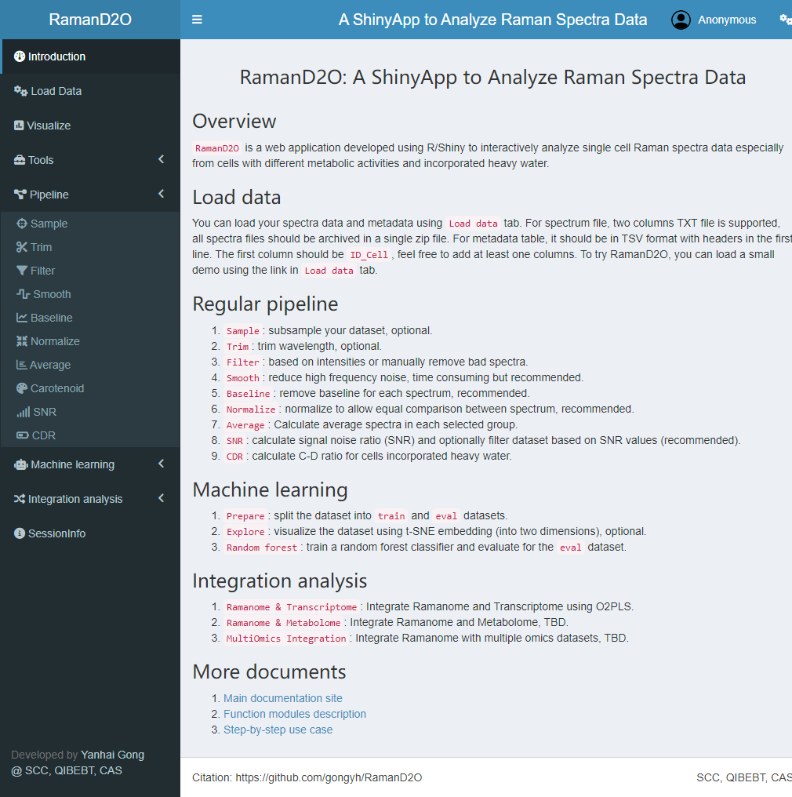

Introduction
RamanD2O is an R Shiny application that allows biologists to perform Raman spectra analysis.

User interface of RamanD2O
Quick start
- Download and Install R
Notes: This app was tested in R 4.x. If you are still using R 4.0-4.2, you may need to manually install specifc versions of a few dependency packages (e.g., randomForest<4.7, Matrix<1.7).
- Install RamanD2O package
#install.packages('pak')
pak::pkg_install('gongyh/RamanD2O')- Run the R shiny app
RamanD2O::runRamanD2O()Contact
gongyh/RamanD2O is developed by Yanhai Gong. We look forward to receive your feedback, bug reports, or suggestions for the further development of this package.